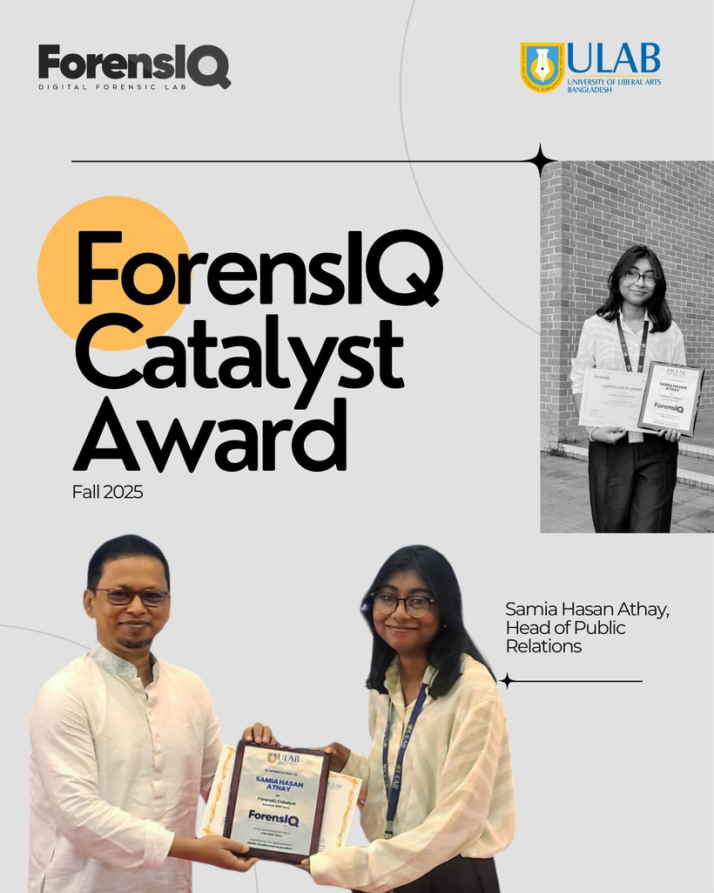

About
Storytelling shapes the way I think, create, and communicate.
Media Studies & Journalism graduate from the University of Liberal Arts Bangladesh, majoring in Public Relations with a minor in Sustainable Development.

I'm creative and motivated, with hands-on experience across public relations, content creation and film production — and I care just as much about the story behind a brand as the craft of telling it.
My work sits at an intersection: strategic communication on one side, and visual and material storytelling on the other. At Grey Advertising, that means supporting bKash's digital and ATL campaigns — client briefs, decks, content plans and photoshoot concepts. At ForensIQ, it means running PR and events for a team working on digital rights and forensics literacy, from organising the Archive and Resist Conclave at BRAC University to facilitating workshops on photo forensics and generative AI.
Outside of PR, I design costumes for short films and work as a production and PR executive on documentary and corporate audiovisual projects — most recently for Film Monks Production House, on a documentary and a corporate film for the International Fertilizer Development Center. I'm also proficient in sign language, which has shaped how I think about accessible, inclusive communication.
I minored in Sustainable Development because I wanted my communication work to point somewhere — most of my academic projects circle back to themes like resource mobilization, poverty and cultural preservation. I'm happiest on projects that let me research, write, design and shoot in the same week.
A couple of milestones.
